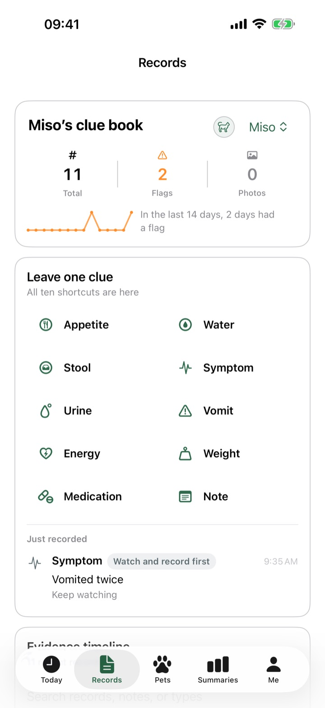
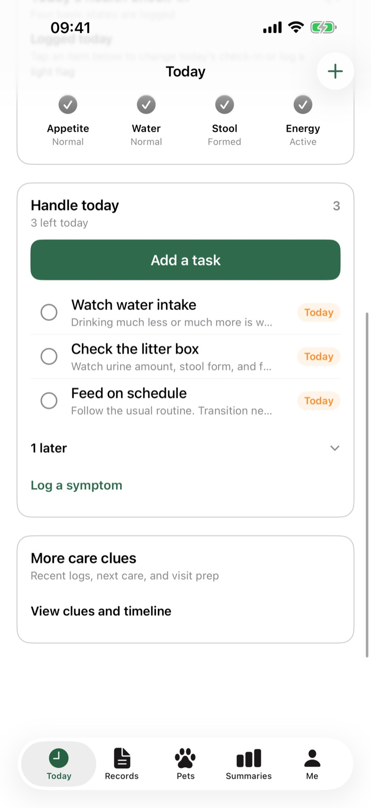
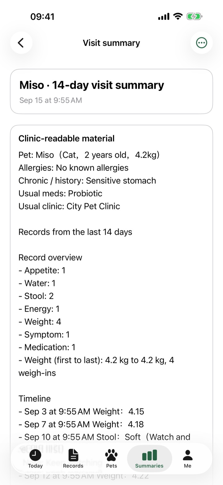
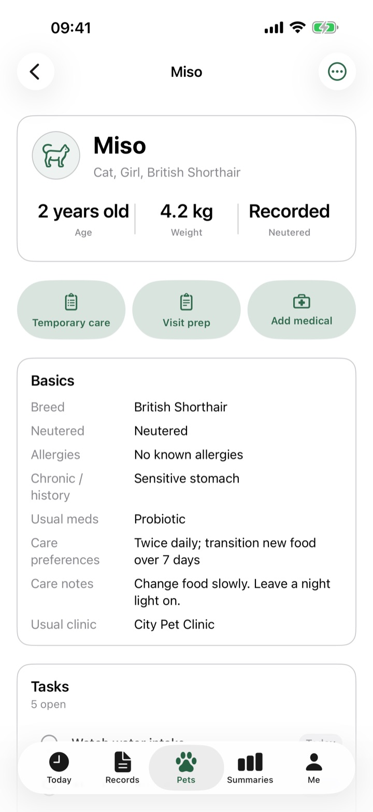
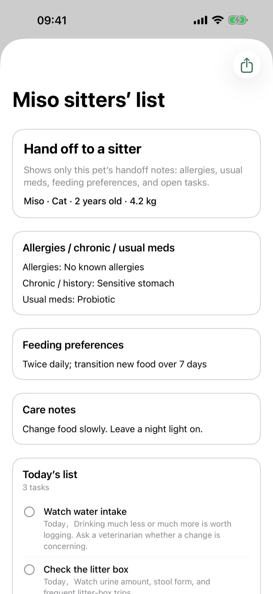

What just happened
A timeline the clinic can read. When something is off, add counts, duration, and a photo. Pet Care Notes does not guess a cause. It keeps the facts you wrote.

Now on the App Store
A pet-care notebook on iPhone
Pet Care Notes is a live iPhone app on the App Store for people looking after a cat or dog. It keeps today’s tasks, health notes, and clinic-ready summaries on this device. There is no account, cloud sync, or advertising. The Chinese name is 毛孩子.
Open it and see today’s tasks and check-in. Log appetite, water, stool, and mood, then turn recent notes into a clinic-readable visit summary. Records stay on this iPhone by default.


Tasks, overdue items, the daily check-in, and the next vaccine or deworming.
Appetite, water, stool, energy, vomiting, weight, and medication traces on a timeline. Weight has its own trend.
Turn 7, 14, or 30 days of notes into a clinic-readable packet. Export a PDF or image.
A timeline the clinic can read. When something is off, add counts, duration, and a photo. Pet Care Notes does not guess a cause. It keeps the facts you wrote.

Allergies, conditions, usual meds, and care notes sit together. Vaccines, deworming, exams, and lab-sheet photos stay under that pet. Cats and dogs both work.

When someone else steps in, share a list for this pet only: allergies, feeding notes, and open tasks. Share as text or a PDF.

Follow the system language, or set one under Me. The store name is 毛孩子宠物健康记录 in Chinese locales, and Pet Care Notes elsewhere.
A full backup is a zip of notes and photos. Save it to Files, a computer, or your own drive. The app does not upload it for you, and there is no iCloud sync.
After you allow it, vaccines, deworming, exams, and tasks use local system notifications. Turn them off in iOS Settings to stop alerts.
The helper organizes your notes on-device into visit-prep points. It does not diagnose, prescribe, or suggest a dose, and it does not replace a veterinarian.
Pet Care Notes is for care notes and clinic prep. For trouble breathing, a seizure, blocked urine, possible ingestion, poisoning, heavy bleeding, or ongoing vomiting, contact a pet clinic or emergency service.
Free, iPhone only. Made by Weizhichao Wei in Shanghai. See support and the privacy policy.